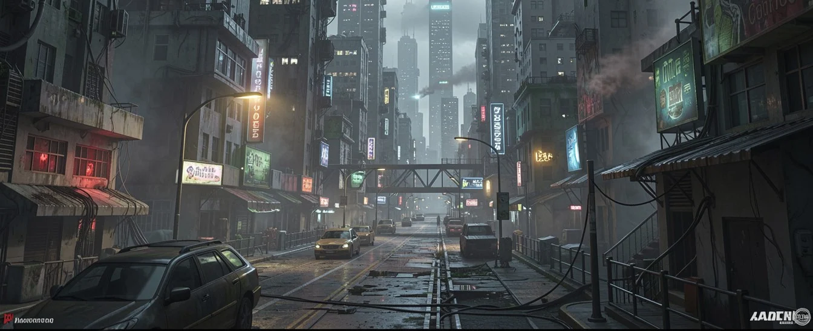

Fritz Lang’ın 1927 yapımı Metropolis’inden bu yana sinema, insanlığın karanlık geleçeğini defalarca perdeye taşıdı. Distopik filmler neden bu kadar ilgi görüyor? Cevap basit: bir toplumun en derin korkuları, onun distopyalarında saklıdır.
Distopya Nedir? Kısa Bir Tarihçe
“Distopya” kavramı, Thomas More’un Utopia’sının (1516) olumsuz yansıması olarak 19. yüzyılda edebiyata girdi. Platon’un ideal devlet tasvirinin tersine dönükü olan distopya, mükemmel görünen ama içten çürümüş toplum düzenlerini anlatır.
Edebiyatta Yevgeny Zamyatin’in Biz (1924), Aldous Huxley’nin Cesur Yeni Dünya (1932) ve George Orwell’ın 1984’ü (1949) türün temel direklerini oluşturdu. Bu üç yapıt, totaliter gözetim, tüketim kültü ve dil manipülasyonu gibi temaları sinema diline açacak kapıyı araladı.
Metropolis’ten Blade Runner’a: Türün Öncüleri
Metropolis (1927, Fritz Lang): Sinemanın ilk distopik baş eserlerinden. Zengin yönetici sınıf ile yer altında çalışan işçilerin ayrışımı — bugün hâlâ geçerliliğini koruyan bir sınıf eleştirisi. İkonik görsel dili doğrudan Blade Runner’ı, The Matrix’i ve Dark City’yi besledi.
Blade Runner (1982, Ridley Scott): Philip K. Dick’in Do Androids Dream of Electric Sheep? romanından uyarlanan film, “insan olmak ne demektir?” sorusunu teknoloji ve kimlik krizi üzerinden sorguluyor. Yoğun neo-noir estetik ve yağmurlu Los Angeles görüntüleri distopik sinemanın görsel dilini kalıcı olarak belirledi.
Children of Men (2006, Alfonso Cuarón): Kısırlık sebebiyle çocuksuz kalan insanlığın içinde bulunduğu kaos, göç krizi ve umutsuzluğu anlatıyor. Tek planşe savaş sahneleri ve el kamerasıyla çekilen bu film, distopik anlatıyı fotografik gerçekçilik düzeyine taşıdı.
Kontrol, Gözetim ve Beden Siyaseti
Distopik sinemanın en sık işlediği tema: devletin bireysel bedeni ve zihni kontrol etme isteği. Margaret Atwood’un romanından uyarlanan The Handmaid’s Tale (1990 filmi, 2017 dizi), kadın bedeninin devlet denetimi altına alınmasını Gilead adıyla kurgusal bir teokraside somutlaştırır. Dizinin ikinci döneminden itibaren kazandığı kült statüsü, metaforun ne kadar güncel okunduğunun göstergesidir.
Michel Foucault’nun Disiplin ve Ceza (1975) adlı eserinde anlattığı Panopticon modelinin sineması, 1984 (1984, Michael Radford), Gattaca (1997, Andrew Niccol) ve Minority Report (2002, Steven Spielberg) gibi filmlerdir. Gözetim toplumu artık akıllı telefonlar ve yüz tanıma teknolojisiyle gerçek hâle geldiğinde bu filmler bilim kurgu olmaktan çıkıp uyarı belgeseline dönüştü.
“Distopya, bize yaşadığımız toplumun açıkça söyleyemediği gerçeği söyler. Bu yüzden bu denli rahatsız edicidir ve bu yüzden bu denli gereklidir.”
— Raffaella Baccolini & Tom Moylan, Dark Horizons (2003)
Neden Distopyalar Bu Kadar Popüler?
Susan Sontag’ın 1965’te Commentary dergisinde yayımladığı “The Imagination of Disaster” adlı makalesinde işaret ettiği gibi: felaket fantezileri, gerçek kaygıların duygusal provası işlevi görür. İzleyici, perdeye taşınan kaotik geleçeği izlerken kendi korkularını güvenli bir mesafeden yaşar.
Fredric Jameson ise distopik kurgunun ideolojik işlevini şöyle açıklar: bu yapıtlar “alternatif bir geleçeği hayal etmenin imkânsızlaştığı bir dönemde, en azından felaket senaryosunu hayal etme kapasitesini canlı tutar.” Başka bir deyişle distopyalar, toplumsal dönüşümün hâlâ mümkün olduğunu hatırlatan olumsuz bir ayna işlevi görür.
21. Yüzyıl Distopyaları: Yeni Temalar
İklim krizi: Interstellar (2014), Mad Max: Fury Road (2015) ve Don’t Look Up (2021) ekolojik çöküşü merkeze alıyor. Bu filmler artık siyasi alegori değil, IPCC raporlarının dramatize edilmiş versiyonu gibi okunuyor.
Dijital gözetim: Black Mirror (2011–) dizisi, teknolojinin insan ilişkileri üzerindeki yıkıcı etkisini her bölümde farklı bir açıdan işliyor. Her bölümün bağımsız bir kâbus olarak kurgulanması, distopyanın artık tek büyük anlatı değil; günlük yaşama sızmış küçük kâbuslar bütünü olduğunu gösteriyor.
Eşitsizlik ve sınıf: Güney Koreli yönetmen Bong Joon-ho’nun Snowpiercer (2013) ve Oscar’lı Parasite (2019) adlı filmlerindeki dikey metafor (tren vagonları, alt/üst katlar), sınıf çatışmasını distopik eçerevede yeniden tanımlıyor. Andrew Niccol’ün In Time filminde de eşitsizlik, yaşam süresinin para olarak dolaşıma sokulmasıyla anlatılıyor; Zamana Karşı incelememizde bu fikri daha ayrıntılı ele alıyoruz.
Türk Sineması ve Distopya
Türk sinemasında distopik anlatı geleneği Batı kadar köklü değil; ancak Zeki Demirkubuz’un bireysel karanlık evreninden Nuri Bilge Ceylan’ın varoluşsal boşluğuna uzanan bir karamsar gelecek imgesi mevcuttur. Dijital nesil yönetmenlerin üretimlerinde ise iklim, kimlik ve gözetim temaları giderek daha belirgin biçimde yüzeye çıkmaktadır.
Sonuç
Distopik sinema bir kaçış değil, bir duruştur. Geleceğin karanlık versiyonlarını perdeye taşıyan filmler, bize bugünün hangi yönde ilerlediğini sormayı zorlar. Bu yüzden izleyici, bu filmlerden hem tedirgin hem aydınlanmış ayrılır. Distopya’yı cezbedici kılan da budur: öngörülen felaket, hâlâ önlenebilir bir gelecektir.
Kaynaklar
- Sontag, S. (1965). The Imagination of Disaster. Commentary, 40(4), 42–48.
- Jameson, F. (1982). Progress Versus Utopia; or, Can We Imagine the Future? Science Fiction Studies, 9(2), 147–158.
- Baccolini, R. & Moylan, T. (Ed.) (2003). Dark Horizons: Science Fiction and the Dystopian Imagination. Routledge.
- Booker, M. K. (1994). The Dystopian Impulse in Modern Literature: Fiction as Social Criticism. Greenwood Press.
- Foucault, M. (1975). Surveiller et punir: Naissance de la prison. Gallimard. (Türkçe: Hapishanenin Doğuşu, İmge Kitabevi.)
- Nama, A. (2008). Black Space: Imagining Race in Science Fiction Film. University of Texas Press.
- Atwood, M. (1985). The Handmaid’s Tale. McClelland & Stewart. (Film: Schlöndorff, V., 1990; Dizi: Miller, B., Hulu, 2017.)
- Dick, P. K. (1968). Do Androids Dream of Electric Sheep? Doubleday. (Film: Scott, R., Blade Runner, 1982.)
- Orwell, G. (1949). Nineteen Eighty-Four. Secker & Warburg. (Film: Radford, M., 1984.)